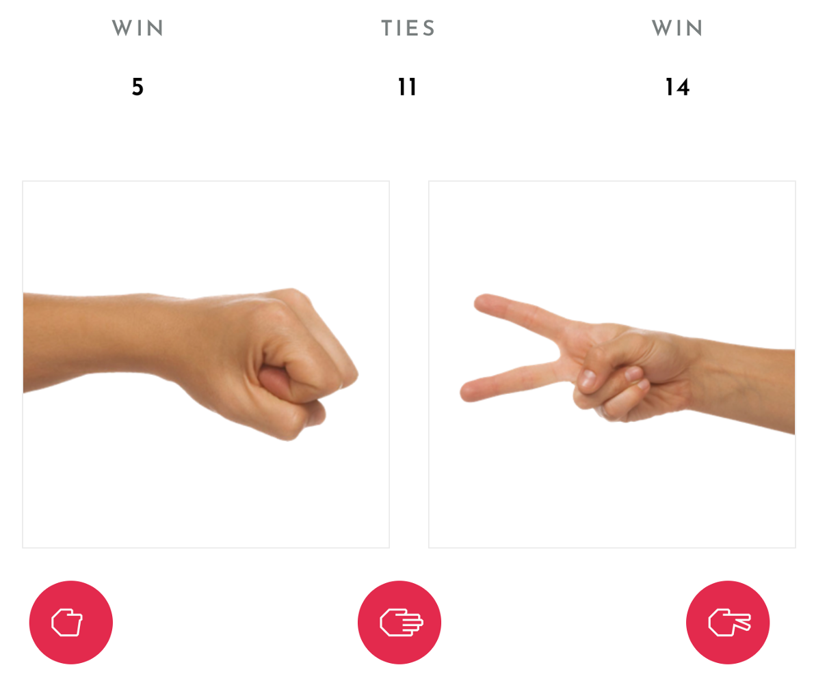
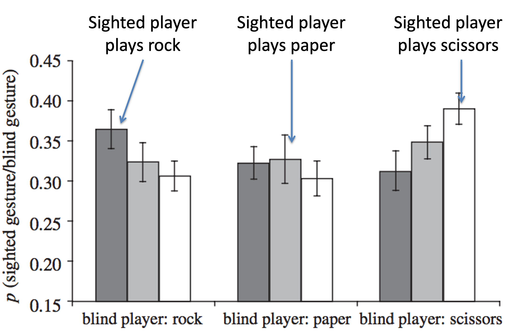

In the games we’ve considered so far, the best strategy is deterministic. That is, depending on the conditions, you should do the same thing every time. For example, in the tit-for-tat strategy in the Prisoner’s Dilemma, you always defect if the other person defected on the last trial and you always cooperate if they cooperated.
But there are some games, where you will always lose if your behavior is totally predictable like this. Instead, the best you can do in these games (at least against a smart competitor) is to be random.
At least in the US, most people have played Rock-Paper-Scissors.
In this game you pick one of three options (Rock, Paper or Scissors) that you indicate with different hand shapes (e.g. balled fist for Rock). At the same time your opponent also picks one fo the options. If you both choose the same thing it’s a tie. If you choose differently the winner is determined as follows: Rock beats Scissors, Scissors beats Paper, and Paper beats Rock.
Have a go at playing this online version of Rock Paper Scissors in which a sophisticated AI system will learn your moves and (usually) beat you …
So how does this AI beat you? Well, it learns and then takes advantages of your biases …
People have all kinds of biases when they play Rock-Paper-Scissors. Here are a few of them …
People have a slight preference for Rock and Scissors over paper. While chance would say 33.3% for each, Rock and Scissors get chosen slightly more than by chance (35% of the time) and Paper only gets chosen 30% of the time.
There also appears to be a slight gender difference with men preferring Rock and women prefering Scissors, with these preferences greatest for novice players.
Winners tend to repeat their actions. In life, repeating a winning move might be advantageous, but in Rock-Paper-Scissors it just makes you predictable. If you lost to someone who played Rock, then Paper might be best for your next move.
Losers tend to switch their actions. Again this makes sense in life, if you’re doing something that doesn’t work then you should probably change what you are doing. However, that makes you more predictable in Rock-Paper-Scissors.
In fact, the lose-shift bias is even more predictable than switching randomly. People actually appear to be biased towards a cycle of Rock \(\rightarrow\) Paper \(\rightarrow\) Scissors \(\rightarrow\) Rock! So if they just lost playing Rock they switch to Paper, and if they just lost playing Paper they switch to Scissors etc …
People don’t like to repeat actions more than a few times. So if they’ve played Rock repeatedly, they are likely to switch. And (as we saw above) they are likely to switch to the next in sequence – Paper!
Finally, we also tend to copy what the other is doing. In one paper the authors had people play Rock-Paper-Scissors against a blindfolded competitor. People tended to copy what the other person did, leading to more draws (36% of the time) than would be expected by chance.
Here’s the data plot. It’s a little complicated so let’s break it down. Each colored bar corresponds to a choice by the sighted player. Darkest Grey for Rock, Mid-Grey for Paper, and White for Scissors.
On the x-axis is what the blind player player. You can see the evidence of copying here (especially for Rock and Scissors) … for example, when the blind player plays Rock the dark bar is highest corresponding to the sighted player being more likely to play Rock.

Of course, this is one bias that the computer can’t learn about!